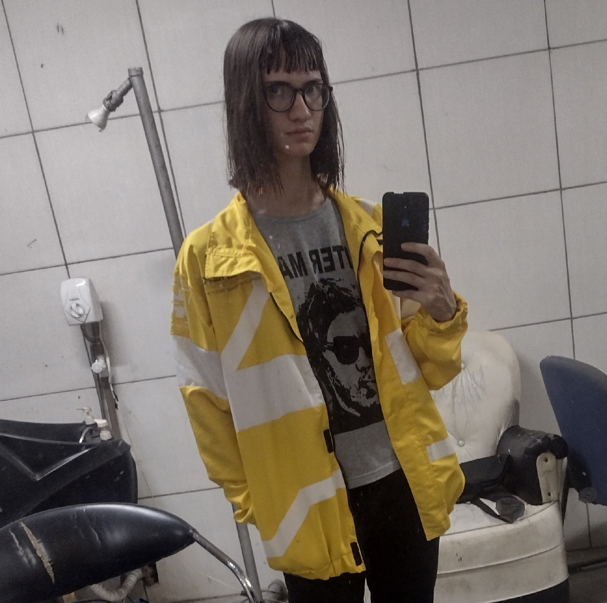

Voltando do bar à noite.
Eu caminho...
E caminho...
E caminho...
Me perco nos becos e vielas.
Assim como me perdi naquela garrafa a 3 horas atras.
Ou como me perdi na confusão e agitação da minha mente...
Quando eu estava apenas começando essa grande ressaca.
E quando a única coisa que queria era esquecer a mim mesmo.
Quando falhei em tentar ser alguém melhor...
Não vi nenhum problema em me entregar ao limbo de uma vez.
Troquei minha antiga rotina que já não era tão boa...
Por essas noites cheias de risadas embriagadas e desesperadas.
Essas risadas embriagadas, de alguém que parece estar feliz ao
conversar com mais um bêbado que acabou de conhecer no bar.
E desesperadas de quando se olha no espelho e vê que toda essa alegria é apenas fingimento.
Por mais que eu veja o mapa eu continuo andando a esmo.
Eu ando pelas ruas que agora não reconheço.
Me perco na cidade enquanto procuro a mim mesmo.
É mesmo?
Como se não bastasse estar embriagado.
Ou estar errado..
Fraco...
Ser um fardo...
Ainda me perco nas luzes do tráfego.
Tráfego?
E a minha escrita tão confusa quanto meu cérebro desorientado.
Andando nessa rua a contramão.
Eu escuto as buzinas e os gritos de preocupação.
E sorrio quando o carro vem a minha direção...
E infelizmente desvia.
Talvez eu ache o caminho para casa até o final dessa noite.
Só não vou achar o brilho que eu tinha no olhar.
Antes de eu jogar tudo fora.
E me tornar tão vazio...
Quanto essa garrafa de whisky.
- - -
Obs: Esse poema foi inspirado no conto "O Gato Preto" de Edgar Allan Poe e obviamente o poema fala sobre alcoolismo,
se você sofre de Alcoolismo ou qualquer outro vício, seja ele em drogas ou não...
Procure ajuda, você merece ser a melhor versão de si mesmo.

Mais uma Garrafa Vazia #24

Para pesquisar por mais poemas, volte para a pagina "Início"
Redes Sociais
Quer ler os poemas no Instagram ou Facebook? Aqui estão as minhas redes: